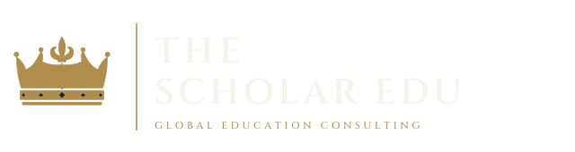

호주 학교에서 프로젝트를
학교 프로그램과 기숙사 생활을 경험하며 호주 교실의 문화를 만납니다.

더 스칼라 에듀 · The Scholar Edu | 진로교육 · 글로벌교육 컨설팅
We connect young people with real-world experiences, mentors and educational pathways in Australia — helping them discover what they enjoy, what they are good at, and where they might belong.
진로를 “고르기” 전에 먼저 “경험”해 보세요. 호주의 학교·대학·현장·멘토를 직접 만나며 나에게 맞는 길을 찾는 프로그램입니다.
Don’t just choose a career. Experience it.
검사로 진로를 “결정”하지 않고, 경험을 통해 스스로 좁혀 갑니다.
관심 분야를 찾습니다. 의학, 비즈니스, 공학, AI, 교육, 디자인, 미디어, 법, 스포츠, 환경.
학교·대학·산업 현장·미래 프로젝트를 직접 경험합니다. 가장 중요한 단계입니다.
그 일을 실제로 하는 사람을 만나 이야기를 듣습니다.
무엇이 즐거웠고, 어려웠고, 놀라웠는지 스스로 돌아보고 기록합니다.
마지막에 비로소 교육과정과 호주 진학 경로를 연결합니다.
한 가지 직업을 “설명”이 아니라 “하루”로 만나 보세요.
학교 프로그램과 기숙사 생활을 경험하며 호주 교실의 문화를 만납니다.
캠퍼스 방문과 학과 워크숍으로 대학 공부를 미리 맛봅니다.
연구시설, 인프라, 공공기관 등 일이 일어나는 곳을 직접 봅니다.
“의사가 되고 싶어요”라면 의대생, 의사, 의료 전문가를 직접 만납니다.
사진은 준비 중입니다. 실제 프로그램 사진으로 교체될 예정입니다.
검사 → 진로 결정이 아니라, 간단한 탐색 → 경험 추천. 끌리는 것을 골라 보세요. (최대 3개)
관심사를 선택하면 추천 경험이 여기에 나타납니다.
5 Days / Sydney — 관광이나 영어캠프가 아닌, 5일간의 진로 발견 경험 (샘플 구성)
프로그램은 개발 중이며, 일정·장소·참가 조건은 각 기관 및 학교의 정책과 협의 결과에 따라 달라질 수 있습니다.
프로그램이 끝나면 수료증 한 장이 아니라, 학생 자신의 기록을 가지고 돌아갑니다.
아래는 학생 체험 프로그램을 운영하거나 협력을 제안해 볼 만한 기관·분야의 후보입니다. 확정된 파트너십이 아니며, 외부·국제 학생의 참여 가능 여부는 기관별로 확인 중입니다.
Sydney Metro · WaterNSW / Warragamba Dam · Engineers Australia
ANSTO · CSIRO · Australian Museum
Sydney Water · Field of Mars EEC · Taronga Zoo
Powerhouse Parramatta · NSW Parliament · Observatory Hill EEC · 대학 아웃리치
시드니 사립학교 boarding 프로그램과의 협력 논의
Career & Education Mentor · 진로·교육 멘토
프로그램, 멘토링, 학교·기관 협력 제안 모두 환영합니다.